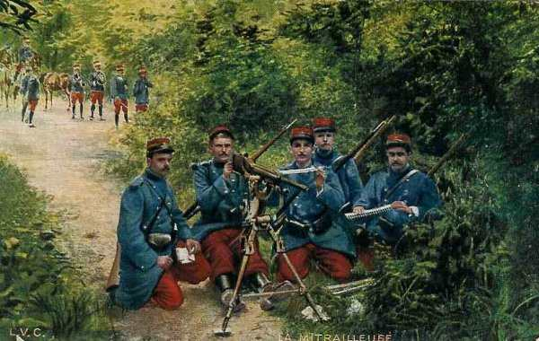
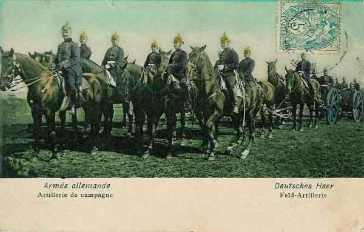
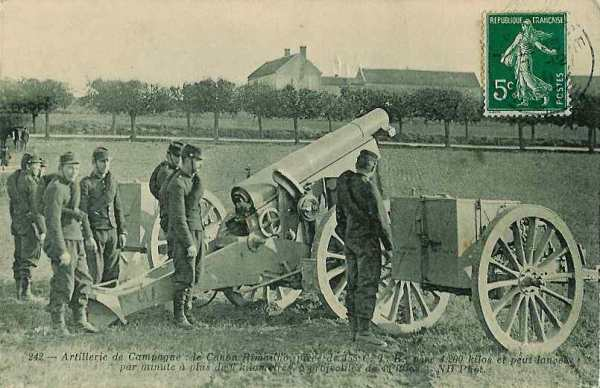
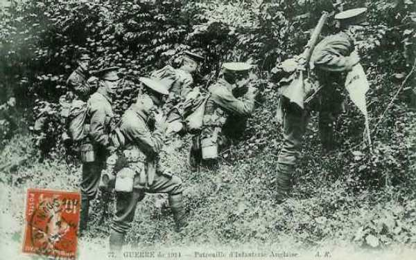
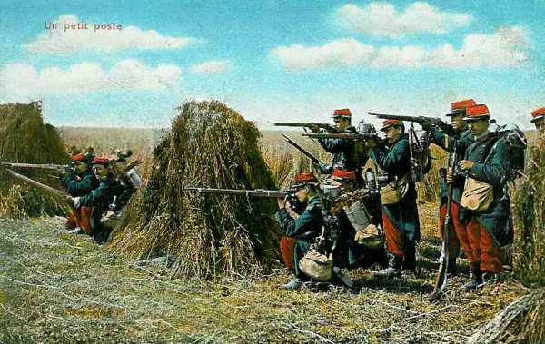
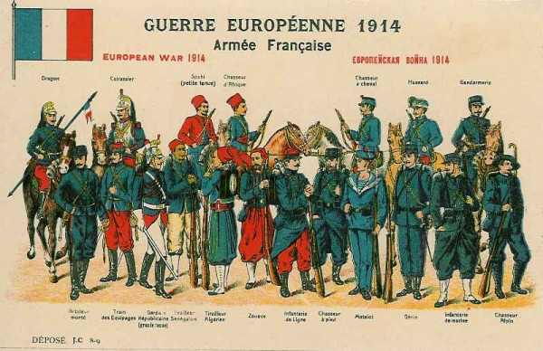

Comparaison des équipements
Depuis la fin du 19e siècle, les équipements ont fortement évolué : armes automatiques, explosifs puissants, artillerie de gros calibre. L’Allemagne s’est particulièrement bien dotée. Les uniformes anglais et allemands tiennent compte de la nouvelle puissance de feu et permettent aux troupes de se camoufler. Les uniformes français ont encore des couleurs trop voyantes.
Lebel - Mauser - Lee Enfield
Toutes les armées sont équipées de fusils à répétition.
Le fusil français Lebel modèle 1886.
En voici les caractéristiques :
 Poids 4,2 kg, magasin chargé.
Longueur 1,30 m.
Calibre 8 mm.
Balle D d’une vitesse initiale de 700 m/s.
Poids 4,2 kg, magasin chargé.
Longueur 1,30 m.
Calibre 8 mm.
Balle D d’une vitesse initiale de 700 m/s.
Ce fusil est en 1914 partiellement démodé. Son magasin tubulaire est situé sous le canon et est prévu pour y loger 8 cartouches, à enfoncer l’une derrière l’autre. C’est une manipulation longue et délicate qui n’est pas possible dans le feu de l’action. Une fois les huit cartouches tirées, le fantassin ne peut plus se servir que du tir au coup par coup. La portée de l’arme est de 800 m en tir tendu.
Le fusil allemand Mauser de modèle 1898.
En voici les caractéristiques :
Poids 4,06 kg (4,420 avec son magasin chargé).
Longueur 1,307 m.
Calibre 7,92 mm.
Balle S en plomb et acier d’une vitesse initiale de 860 m/s.
Le fusil peut être rechargé au moyen d’une lame chargeur de cinq cartouches, ce qui permet un rechargement rapide au cours de l’action. C’est un avantage par rapport au fusil français. La balle a une trajectoire tendue donc précise de 800m.
Le fusil anglais Lee Enfield modèle 1891 (mark III).
En voici les caractéristiques :
Poids 3,746 kg.
Longueur 1,13m.
Calibre 7,65 mm.
Vitesse initiale de la balle : 671 m/s.
Le fusil comporte un chargeur de 10 cartouches (2 lames-chargeur de 5 cartouches) et est performant. Il permet à un fantassin expérimenté de tirer jusqu’à 15 coups à la minute dans une cible. Les Allemands en feront l’expérience lors de la bataille de Mons où ils croiront se trouver sous le feu d’armes automatiques.
Le fusil belge est le Mauser allemand à 5 cartouches de modèle 1889.
Poids 4,415 kg.
Longueur 1,27 m
Calibre 7,65 mm
Mitrailleuses
La mitrailleuse française modèle de Puteaux ou de Saint-Etienne tire la cartouche Lebel. Elle est approvisionnée par des bandes métalliques, est refroidie par air et tire entre 200 et 600 balles de 8 mm à la minute. Chaque régiment d’infanterie est doté de 6 mitrailleuses. La cavalerie comprend 1 section de mitrailleuses par brigade.

C’est une arme précise mais délicate de fonctionnement.

La mitrailleuse allemande Maxim MG08 (Maschinengewehr 1908) tire des cartouches d’infanterie sur bande de toile.

Chaque régiment est doté de 6 mitrailleuses. La cadence de tir est de 200 à 600 coups/ minute. Le refroidissement se fait par eau, contenue dans un manchon autour du canon.
La mitrailleuse anglaise Lewis tire 600 coups à la minute. Le refroidissement se fait par eau. Chaque division est équipée de 24 mitrailleuses.
Artillerie de corps d’armée

Les Français ont développé un canon de calibre 75 mm, muni d’un frein hydraulique et tirant des obus de 7,3 kg avec une portée maximale de 8.230 mètres. Les maîtres d’uvre de ce projet sont Deport et Sainte Claire Deville. Ce canon pèse 1.140 kg, en poids attelé, 2.125 kg. C’est le meilleur canon de l’époque.

Chaque corps d’armée est équipé de 120 canons de 75 (30 batteries de 4 pièces).
Chaque corps d’armée allemand possède :
108 canons de campagne de 77 mm (945 kg.).

36 obusiers de campagne de 105 mm tirant des obus de 15 kg. Cet obusier tire de 5 à 6 coups par minute à une portée de 6.000 m.

16 obusiers de 150 mm (modèle 1909) tirant des obus de 42 kg à raison de 2 ou 3 coups par minute, avec une portée de 7.400 m. Le projectile pèse 40 kg et contient 8 kg d’explosif. Poids de la pièce attelée : 2.838 kg.
8 mortiers de 21 cm d’une portée de 8.500 m et tirant un projectile de 119 kg.
A titre de comparaison, un corps d’armée français tirant une salve de toutes ses pièces envoie une charge de 876 kg à une distance maximum de 7 km.
Un corps d’armée allemand tire une salve de 1.580 kg dont 672 jusqu’à 10 km.
De plus, le canon de campagne français de 75 avec son tir tendu ne peut rien contre une troupe protégée par un obstacle naturel, alors que l’obusier allemand effectue un tir courbe et peut tirer derrière une colline, dans un ravin.
Artillerie lourde d’armée
Une armée française dispose de :
104 obusiers lourds de 155 (obusier Rimailho) d’une portée maximale de 5000 m.

96 canons de 120 courts (Baquet).
80 canons de 120 longs (Bange).
Soit 280 pièces
Une armée allemande dispose de :
360 canons longs de 100.
360 canons longs de 130.
128 mortiers de 210.
Soit 848 pièces
Sous l’angle de la puissance du feu, l’armée allemande dispose donc d’un avantage considérable (trois fois plus de pièces que les Français). En outre, des repérages par avion sont effectués. Certains régiments français se sont retrouvés sous le feu de l’artillerie sans avoir vu les Allemands ni pris l’ordre de bataille.
Quant aux Anglais, ils disposent du 18-pounder et howitzer de campagne 4-5 pouces ainsi que le 60 pounder.


La visibilité des uniformes
Les guerres du début du vingtième siècle (guerre des Boers, guerre russo-japonaise, guerres balkaniques) ont révélé l’effet dévastateur des armes automatiques pour une infanterie en terrain découvert.
Il s’avère d’un grand intérêt de chercher à se rendre le moins visible possible. C’est ainsi que l’armée allemande adopte dès 1911 une tenue de campagne de couleur gris vert ou « feldgrau », remplaçant la tenue bleue, toujours en usage en temps de paix.

Les Anglais ont adopté la tenue kaki, dès la campagne au Soudan.

Les Français ont, sous l’impulsion de Messimy, ministre de la guerre et ancien officier, effectué des essais de tenue de campagne camouflée (uniforme réséda), En août 1914, rien n’a abouti. Les troupes portent toujours la veste bleue et le pantalon garance. Cette trop grande visibilité aura un effet désastreux au début de la guerre.

Le contraste est frappant entre les uniformes voyants de l’armée française

et les tenues "feldgrau" de l’armée allemande